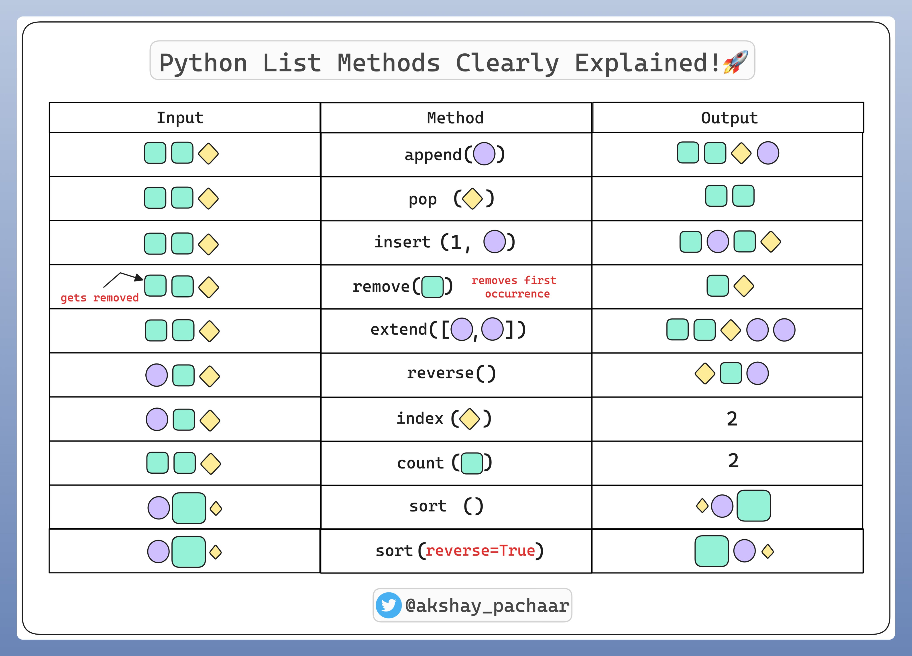
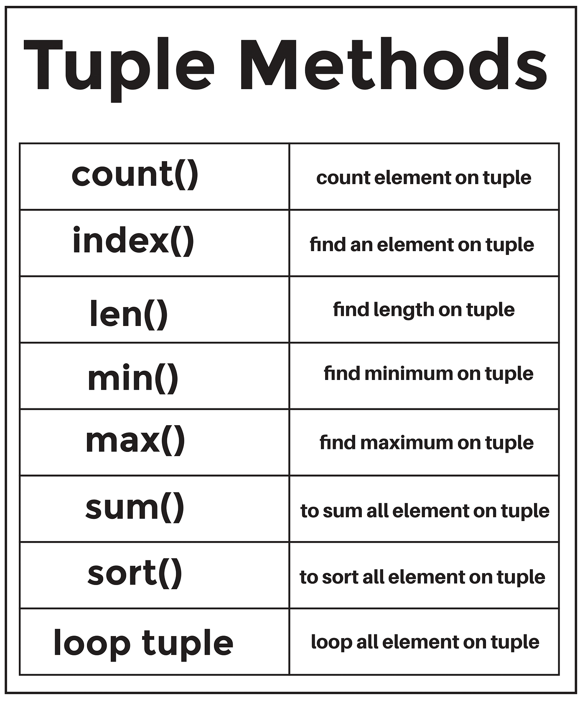
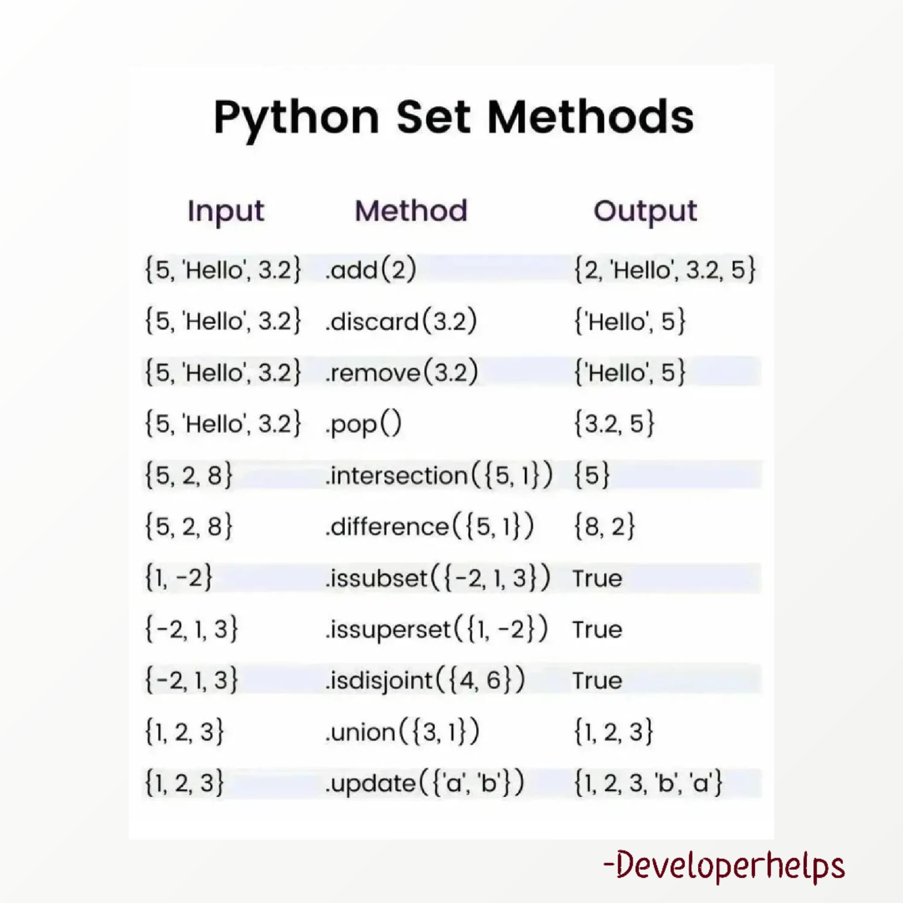
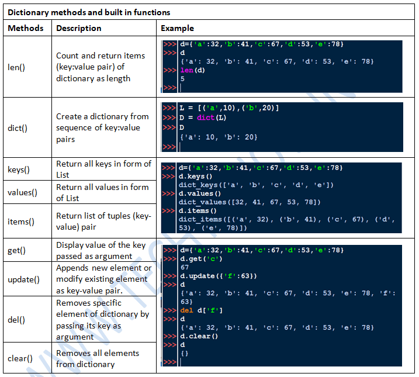
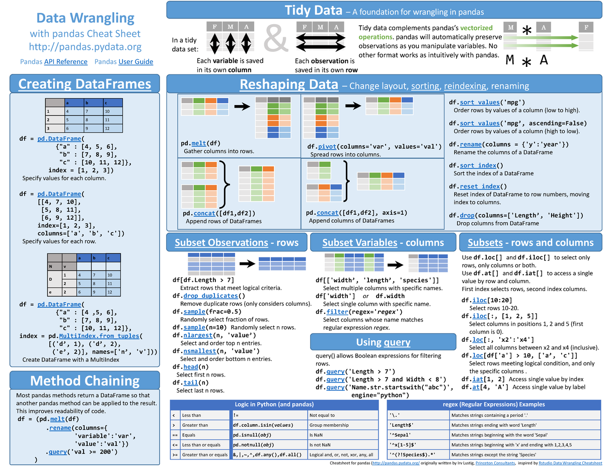

From raw variables to visual insights
Store data, automate the repetition, work with tables at scale and chart what matters. Built for leaders who build, buy or approve AI. No developer background needed.
> uv run first_steps.py What will we do with the data? store → repeat → tabulate → show >
Four moves turn raw data into a decision
Every AI product runs on these same four moves
| The move | Where you meet it in AI work |
|---|---|
| 01 Data structures | API payloads and LLM responses arrive as dictionaries and lists (JSON). |
| 02 Loops | Batch scoring, evaluating a model on every test case, retrying a failed API call. |
| 03 Pandas | Cleaning and preparing training data; testing a hypothesis on real numbers in minutes. |
| 04 Visualization | Turning model output into a picture a stakeholder can decide on. |
Data Structures
How is data stored in Python?
Every AI system takes data in and sends data out. Before you can loop, tabulate or chart anything, you need to know how Python holds a collection of values.
Your container choice decides your operations
A data structure is a way to organize, store and access data efficiently. It decides how you can access, search, modify and iterate over a collection.
| Structure | Syntax | Ordered | Mutable | Duplicates | Reach for it when… |
|---|---|---|---|---|---|
| list | ["a", "b"] | Yes | Yes | Yes | order matters and items change often |
| tuple | ("a", "b") | Yes | No | Yes | data is constant and must not change |
| set | {"a", "b"} | No | Yes | No | you need unique items or group comparisons |
| dict | {"k": "v"} | Yes* | Yes | keys: No | you look values up by a name, ID or category |
- Model inputs and outputs travel in these four shapes. An LLM's JSON reply is a dict of lists.
x in my_set is near-instant; x in my_list scans every item. On millions of rows, the wrong container is the slow pipeline.Python counts from zero. Plan for it
Every ordered collection is zero-indexed: the first element sits at position 0, the last at len - 1.
- Row 0 of a DataFrame, token 0 of a sentence, the first prediction in a batch: zero-indexing is everywhere in AI tooling.
- Off-by-one errors silently shift data: the wrong row gets the wrong label.
5. my_list[6] raises IndexError; my_list[-1] returns the last item.Iterable
You can loop over it, one item at a time: the engine of Module 02.
Mutable vs immutable
Can it change after creation? Lists can; tuples can't.
Mixed types
One collection can hold numbers, text and even other lists. Exception: set items and dict keys must be immutable.
Lists: the default home for ordered, changing data
A list is an ordered, mutable collection that allows duplicates: the most-used structure for sequences of data.
- A queue of documents to process, a batch of predictions: anything ordered that grows and shrinks.
- Lists are the raw material Pandas turns into columns (Module 03).
remove() deletes only the first match, and raises ValueError if the item isn't there. Check with in first.fruits = ["apple", "banana", "orange"]
print(fruits[1]) # banana
fruits.append("watermelon")
print(fruits) # ["apple", "banana", "orange", "watermelon"]
fruits.remove("banana")
print(fruits) # ["apple", "orange", "watermelon"]- When you need to change, add or remove items frequently.
- When order matters.
Tuples: lock data you never want changed
A tuple is an ordered, immutable collection: once created it can't be modified, which makes it efficient in memory and safe for data.
- Fixed records: coordinates, an image's (height, width), a (date, value) pair.
- Immutability is a safety net: reference data can't be changed by accident mid-pipeline.
(10,) is a tuple, (10) is just the number 10.coordinates = (10, 20)
print(coordinates[0]) # 10
data = ("John", 25, "Lisbon")
name, age, city = data
print(name) # John
print(city) # Lisbon- When data is constant and must not be changed.
- As dictionary keys, or to return multiple values from a function.
Sets: kill duplicates, compare groups instantly
A set is an unordered collection with no duplicates, built for math-style operations: union, intersection, difference.
- Deduplicate customer IDs or labels in one step.
- Compare cohorts: used A and B (
&), A or B (|), A but not B (-).
{} creates an empty dict; use set() for an empty set.colors = {"red", "blue", "green"}
colors.add("yellow")
colors.remove("blue")
print(colors) # {'red', 'green', 'yellow'}
## --- ##
A = {1, 2, 3}
B = {3, 4, 5}
print(A | B) # Union: {1, 2, 3, 4, 5}
print(A & B) # Intersection: {3}
print(A - B) # Difference: {1, 2}Dictionaries: key → value, the shape of every API
A dictionary stores key:value pairs. Keys are unique and immutable (string, number, tuple), so you can jump straight to a value by its name.
- JSON from APIs and LLM responses loads straight into dicts.
- Map IDs to records, categories to labels, settings to values.
student["email"] raises KeyError when the key is missing. student.get("email") returns None instead of crashing.student = {"name": "Ana", "age": 22, "course": "Data Science"}
print(student["name"]) # Ana
student["age"] = 23 # Update value
student["grade"] = 18 # Add new keyLoops
What is a loop?
Writing an instruction three times is fine. Three million times is not. Loops make one instruction run over every item in a list, tuple, set or dict.
Loops turn one instruction into a thousand
A loop repeats a set of instructions automatically. Instead of writing the same code many times, the loop does it for you.
- Cleaner, shorter, easier to maintain: change the logic once, not in every copy.
- Every batch job (scoring records, evaluating a model on each test case, calling an API per row) is a loop.
# Without a loop:
print("I'm going to study Python!")
print("I'm going to study Python!")
print("I'm going to study Python!")
# With a while loop:
i = 0
while i < 3:
print("I'm going to study Python!")
i += 1
# With a for loop:
for i in range(3):
print("I'm going to study Python!")while: repeat until the condition says stop
while repeats a block as long as a condition is True. It asks a yes/no question before every pass and stops at the first "no".
- Use it when you don't know the count up front: poll until a job finishes, retry until an API answers, train until accuracy stops improving.
counter += 1 and the condition never turns False: an infinite loop. Always move something toward the exit.counter = 1
while counter <= 3:
print("Hello!")
counter += 1counterstarts at 1.whileasks: "iscounter≤ 3?"- If yes, print "Hello!" and add 1 to
counter. - When
counterreaches 4, the condition is False and the loop ends.
for: walk any sequence, one item at a time
for is ideal when you know up front how many times to repeat, or want to visit every item of a sequence: a range of numbers, a string, a list.
for i in range(3):
print("Hello!", i)
>> Hello! 0
Hello! 1
Hello! 2for i in "Python":
print(i)
>> P
y
t
h
o
nfruits = ["apple", "banana", "orange"]
for fruit in fruits:
print(fruit)>> apple
banana
orange- Apply the same step to every record: clean each text, score each customer. Pandas (next) runs this loop for you.
range(3) stops before 3 → 0, 1, 2. Looping over a string yields characters, not words.Pandas
Tables at scale.
Real business data arrives as rows and columns, thousands of them. Pandas applies an operation to a whole column at once, so you write the intent, not the loop.
Pandas: a spreadsheet you can program
Pandas is a library for structured data (tables). It makes reading, cleaning, transforming and analyzing data fast and repeatable.
- The standard step to prepare data before applying models.
- Every analysis becomes a re-runnable script, with no manual copy-paste between spreadsheets.
Series is a column; DataFrame is the table
A Series is one-dimensional: values with labels (the index). A DataFrame is two-dimensional: rows and columns, like an Excel sheet. Think of it as a dictionary of columns (Module 01).
- The DataFrame is the input format ML libraries such as scikit-learn expect.
- Fast access by column name, not by cell address.
df["tip"] returns a Series; df[["tip"]] returns a DataFrame. Mixing them up is a classic source of shape errors.import seaborn as sns
import pandas as pd
# Load the 'tips' dataset directly from Seaborn
df = sns.load_dataset('tips')
df| total_bill | tip | sex | smoker | day | time | size | |
|---|---|---|---|---|---|---|---|
| 0 | 16.99 | 1.01 | Female | No | Sun | Dinner | 2 |
| 1 | 10.34 | 1.66 | Male | No | Sun | Dinner | 3 |
| 2 | 21.01 | 3.50 | Male | No | Sun | Dinner | 3 |
| 3 | 23.68 | 3.31 | Male | No | Sun | Dinner | 2 |
| 4 | 24.59 | 3.61 | Female | No | Sun | Dinner | 4 |
| … | … | … | … | … | … | … | … |
| 239 | 29.03 | 5.92 | Male | No | Sat | Dinner | 3 |
| 240 | 27.18 | 2.00 | Female | Yes | Sat | Dinner | 2 |
| 241 | 22.67 | 2.00 | Male | Yes | Sat | Dinner | 2 |
| 242 | 17.82 | 1.75 | Male | No | Sat | Dinner | 2 |
| 243 | 18.78 | 3.00 | Female | No | Thur | Dinner | 2 |
One line loads CSV, Excel, SQL or JSON
Reading data means loading information from a file into Python. Pandas reads many formats (CSV, Excel, JSON, text) with one function each.
| Syntax for | How to use | Explained |
|---|---|---|
| IMPORT | import pandas as pd | Import the library using its standard alias |
| READ_CSV | pd.read_csv(filename) | Reads from a CSV file |
| READ_TABLE | pd.read_table(filename) | Reads from a delimited text file (like TSV) |
| READ_EXCEL | pd.read_excel(filename) | Reads from an Excel file |
| READ_SQL | pd.read_sql(query, connection_object) | Reads from a SQL table/database |
| READ_JSON | pd.read_json(json_string) | Reads from a JSON formatted string, URL or file |
- Point Pandas at the data the business already has (exports, warehouse tables, API dumps), with no re-keying.
pd.read_csv(file, encoding="utf-8").Six commands to understand any dataset
Before modeling anything, inspect: size, columns, types, missing values, distributions. Pandas answers each in one line.
- Read files: CSV, Excel, JSON and more
- Select and filter rows and columns
- Handle missing values
- Group and summarize
- Five minutes of inspection validates a hypothesis and catches the gaps that silently break AI models.
sort_values() returns a new DataFrame. df is unchanged unless you reassign it.import pandas as pd
# Example: load a CSV (use a real file if you have one)
df = pd.read_csv("example_file.csv")
# Show the first 5 rows
print(df.head())
# Show the number of rows and columns
print(df.shape)
# Show the column names
print(df.columns)
# Show general info (data types, null values, etc.)
print(df.info())
# Descriptive statistics for numeric columns
print(df.describe())
# Show the top 10 records sorted by a column (e.g. "Age")
print(df.sort_values(by="Age", ascending=False).head(10))Data Visualization
Seaborn and Matplotlib.
Decision-makers don't read 244 rows. They read shapes, rankings and gaps. Visualization turns the analysis into an argument.
Text is data too: read its hidden characters
In a string, sequences starting with a backslash (\) are escape sequences. They stand for invisible characters like line breaks (\n) and tabs (\t), or let you put quotes inside a string.
- Raw text (reviews, emails, transcripts) feeds most AI language work. This excerpt is the dataset we chart next.
- Clean
\n,\tand stray quotes before counting words.
"C:\new\data.csv", the \n becomes a line break. Use a raw string r"C:\new\data.csv" or forward slashes.'One night, coming from the city to Engenho Novo, I met a young man from the neighborhood on the Central train, someone I know by sight and by hat.
He greeted me, sat down beside me, talked about the moon and the ministers, and ended up reciting verses to me.
The ride was short, and the verses may not have been "entirely bad".'
'One night, coming from the city to Engenho Novo, I met a young man from the neighborhood on the Central train, someone I know by sight and by hat. \n
\tHe greeted me, sat down beside me, talked about the moon and the ministers, and ended up reciting verses to me. \n
The ride was short, and the verses may not have been \"entirely bad\".'
Matplotlib gives control; Seaborn gives speed
Both draw charts from your data. Matplotlib is the base library; Seaborn is built on top of it and focuses on statistical graphics.
The base visualization library in Python.
- Very flexible and customizable
- Can create practically any type of chart
- Needs more lines of code for advanced setups
- Ideal for highly customized, detailed charts
Built on Matplotlib, focused on statistical charts.
- Simple, concise syntax
- Elegant, modern design by default
- Makes complex charts easy: boxplots, violin plots, heatmaps
- Excellent for exploratory analysis and fast presentation
- Use Seaborn to scan a dataset in minutes; switch to Matplotlib when a board-ready chart needs exact control.
Same data, two charts: which story lands faster?
Both show the top 10 most frequent words in the original Portuguese text of Dom Casmurro (English meaning in grey). The Matplotlib version is unsorted; the Seaborn version is sorted, colored and labeled.
- Sorting plus value labels lets an executive read the answer in two seconds: the bar for any AI result you present.
From raw variables to a decision-ready chart
> next_in_series ML Models < Classification and Regression >
Thank you.
Made by Diogo Freitas & João Francisco Botas
Reference: list and tuple methods


Note: tuples are immutable and have no .sort() method. Use sorted(t), which returns a new list.
Reference: set and dictionary methods


Reference: the Pandas data-wrangling cheat sheet
